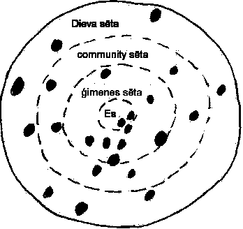

|
White Life (baltā dzīve)
The psyche is described as life within a white-fence (baltā sēta). Mental balance is called white light (baltā dzīve). Our goal in our psyche is to get everything withing our mind to fit together (saderēta). As well, our outward behavior is to fit together with the environment.
White (Balta): Mental health is when all elements of our psyche are fitted together (saderēta). Visually, it is defined as white (balta), which is a combination of all colours in the visual spectrum. Of course, this parallels everything within gods fence (dieva sēta) as well. See diagram. When everything is balanced, we see sparkling shine of white (balta). Common metaphors for the sparkling shine of "balta" (white) are white light, anything that shines or sparkles, silver (sudraba), gold (zelta), leaves smeared with butter.
Black: Black is the opposite of white and light. No light, no colour. Black is the metaphor used to describe parts of self and universe that does not fit together. (nav saderēts).

Your psyche is white (balts) when balanced (saderēta)
Your psyche is black (melns) when not balanced (nav saderēta)
The same principle applies to all within gods fence (dieva sēta)
In the diagram, most is white, with small black spots. So most is balanced, and some spots are not. We can add grey or fogginess to many parts to indicate a somewhat balanced state.
Balts, Dailums, Skaists, Skaidrs
Many metaphors are used to describe balance. Something clear (skaidrs) describes balance. Something makes sense when it is clear, not foggy. A light shines best when it is clear. So too do we and everything around us. In Lithuanian, "skaitas" means Latvian "skaidrs". In Latvian "skaists" means beautiful. White (balts) is the colour of the sun. The sun's light is the source of life, which can multiply to create more life. "Daiļums" is Latvian word to describe harmony and balance. Specifically, one's ability to create this white light which is clear (skaidrs) and therefore beautiful (skaists).
White Light as Colour Spectrum
The coloured light spectrum combined produces white light. Conversely, white light refracted, produces a spectrum of colours. In Latvian folklore, all characteristics of your personality are metaphorically explained as your "spectrum of colours". There is no emphasis on putting a specific trait to a colour. Traits are described in natural order according to the process and approach of a task. One can say loosely that the natural spectrum of colours, defines the natural spectrum of traits. The following are traits considered important in Latvian folklore:
SSS2010 Home |